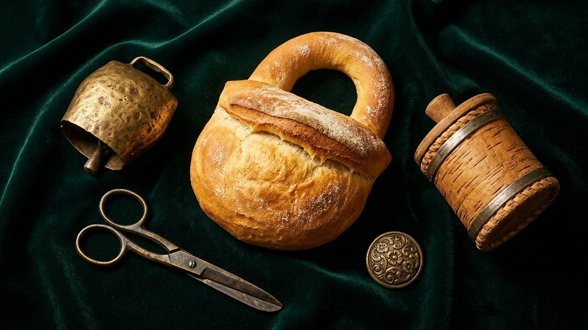
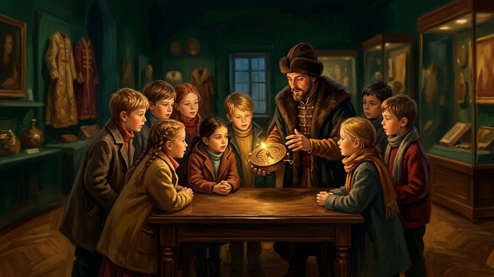
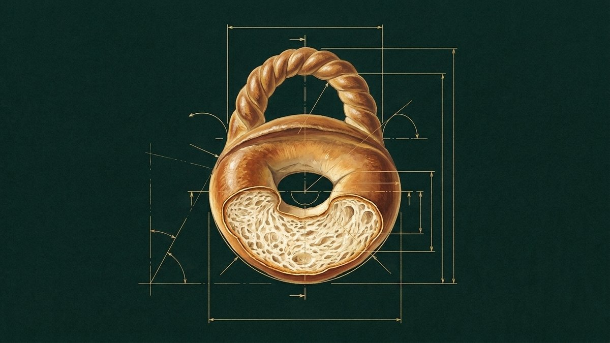
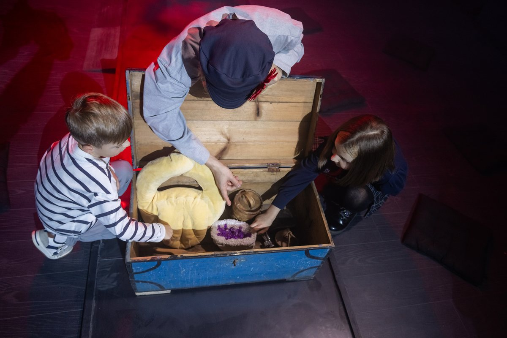
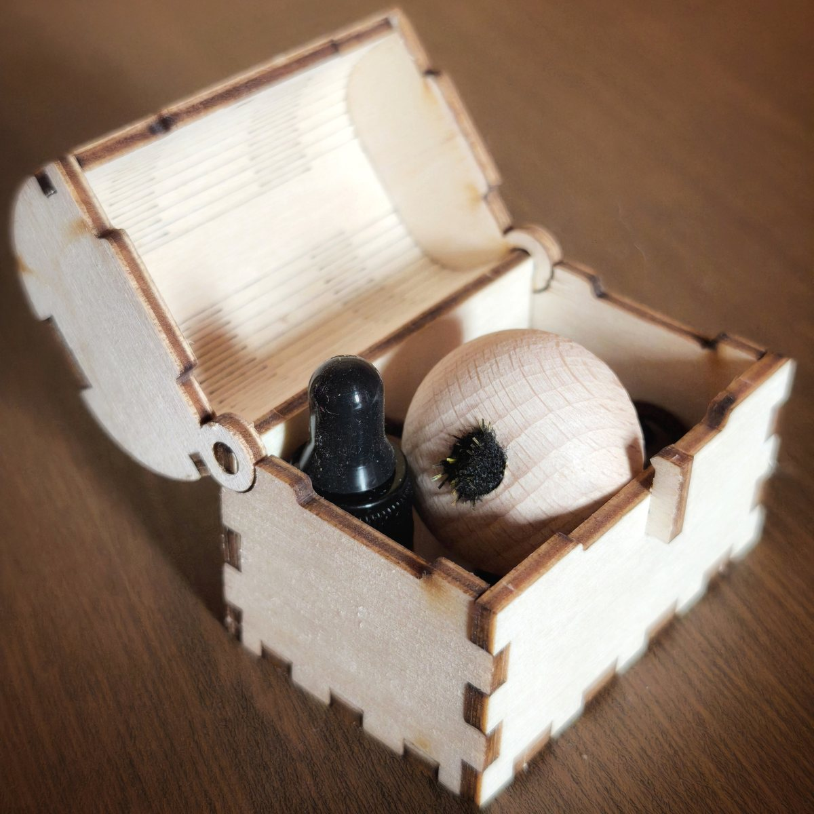

Тактильные артефакты и московский калач XVI века: зачем школьникам трогать экспонаты руками

Почему память рук работает сильнее запрета у стеклянной витрины
Когда четвероклассники или пятиклассники заходят в классический музейный зал, первое слово, которое звучит от смотрителя, почти всегда «отойдите от стекла». При таком запрете быт XVI или XVIII века остаётся для ребёнка набором плоских карточек с незнакомыми словами, которые забываются уже по дороге обратно в школу.
На иммерсивной программе «Москва. Тайна потерянных бусин» герои Профессор и Демьян строят диалог иначе. Прежде чем назвать исторический термин, ведущие дают классу предмет прямо в ладони. Ребята взвешивают тяжёлую кованую латунь, слушают глухой удар язычка внутри колокольчика, открывают плотную крышку берестяного сосуда и пытаются сами догадаться, зачем горожане носили вещь на поясе или держали у печной заслонки.
Пока гипотеза рождается из собственного осязания, внимание класса держится без окриков педагога. Даже подвижные ребята, которым трудно стоять сорок минут у стенда молча, активно включаются в общее расследование в одном тёплом зале.

Интерактивный стол реквизита XV-XIX веков: выберите предмет из сундука
Нажмите на один из пяти экспонатов на схеме или на кнопку ниже, чтобы увидеть век, материал, бытовое назначение и вопрос, который ведущие Демьян и Профессор задают классу на программе.
Латунное ботало
Глухой грудной звон латуни помогал находить скот в тумане и лесном подлеске на подмосковных выгонах.
Что чувствует школьник: холодный кованый металл, тяжёлый язычок и низкий густой звук рядом с ладонью.

Анатомия московского калача XVI века: почему ручку не доедали
Финал 90-минутной программы связывает историю старой Москвы со вкусом: дети пробуют настоящий калач по старинному рецепту XVI века. Задолго до того как булки стали упаковывать в бумагу, форма калача сама решала задачу уличной гигиены. Горожанин покупал горячую выпечку на площади прямо с лотка, держа её за толстую дужку-ручку немытыми после работы или дороги руками.
Самую вкусную мягкую часть, которую пекари называли животом, и поджаристую корочку сбоку (губу) съедали целиком. Запечённую ручку берегли до конца трапезы: бедные ремесленники или купцы отдавали её нуждающимся либо пускали на корм птицам, а выражение «дойти до ручки» закрепилось в русском языке именно из московских пекарен.
- Плетёная дужка: плотное тесто с минимальной влажностью для удобного хвата рукой.
- Губа и живот: тонкая поджаристая корка над разрезом и воздушный тёплый мякиш внутри.
- Гастрономический якорь: вкус в конце занятия закрепляет все прошлые названия эпох.
Учителя истории и начальных классов замечают интересный эффект после такого финала: спустя неделю на уроке окружающего мира или москвоведения ребята безошибочно объясняют, зачем пекарь выгибал калачную дужку, как работали щипцы для нагара на сальной свече и почему звон коровьего ботала делали глухим. Когда абстрактные термины из учебника соединяются с осязанием, запахом специй и вкусом свежей выпечки, класс запоминает материал без зубрёжки и скуки.
Лента пяти столетий: 12 исторических бусин и 13-я бусина будущего
В основе сюжета «Москва. Тайна потерянных бусин» лежит нить времени от XV до XIX века. Выберите столетие на ленте ниже, чтобы увидеть, какая сфера городской жизни открывается школьникам на этом этапе 90-минутного маршрута.
Реальные кадры с программы: как дети работают с сундуком и запахами
Фотографии из архива площадки показывают, как именно тактильный реквизит встроен в диалог на сцене. Сначала ребята вместе с героем открывают синий деревянный сундук, достают крупный бутафорский калач для разбора его формы и берестяной туесок, а позже передают по рукам сундучок с ароматной пуговицей и деревянным шаром.


Сравнение форматов тактильной истории и классических музеев Москвы
При выборе выезда педагогу полезно сопоставить доступ к предметам, предельную вместимость одного зала и дорогу от метро. Условия посещения сторонних музеев уточняют на их сайтах.
| Площадка | Работа с предметами | Класс в одном зале | Дорога и погода | Условия и расчёт |
|---|---|---|---|---|
| Точка Счастья. Дети (ТРЦ «Филион») | Ботало, сымало, туесок, пуговица, калач в руках | От 5 до 45 учеников без деления | 3-5 мин пешком от м. и МЦД-1 «Фили», гардероб, фудкорт | Расчёт под класс по +7 (495) 145-35-00 |
| Музей Москвы | Экспонаты преимущественно в витринах, спецпрограммы по расписанию | Зависит от выбранного зала | Близко к метро «Парк культуры» | Уточнять на официальном сайте музея |
| Государственный исторический музей | Подлинники за стеклом, лекционный формат для больших групп | Часто требуется деление на подгруппы | Пеший подход от м. «Охотный ряд» по улице | Уточнять на сайте ГИМ |
| Музей «Палаты бояр Романовых» | Камерные исторические интерьеры, строгие музейные правила | Малая пропускная способность за раз | Улица Варварка от м. «Китай-город» | Уточнять на сайте музея |
Частые вопросы учителей и родителей
Какие реальные предметы школьники держат в руках на программе?
В ходе 90-минутной игры «Москва. Тайна потерянных бусин» ученики передают по кругу латунное ботало, старинные щипцы-сымало для свечного нагара, берестяной туесок и ароматную пуговицу, а в финале пробуют калач по рецепту XVI века.
Сколько учеников помещается в зале без деления класса?
Площадка в ТРЦ «Филион» по адресу Багратионовский проезд, д. 5 принимает от 5 до 45 школьников за один заход в едином зале, поэтому класс не разбивают на разные смены.
Безопасно ли угощение калачом при пищевых особенностях у детей?
Перед выездом организаторы и родители уточняют состав и нюансы по конкретной группе по телефону +7 (495) 145-35-00 во время бронирования слота.
Для какого возраста подходит игра с артефактами?
«Москва. Тайна потерянных бусин» рассчитана на школьников 1-6 классов, а для учеников 4-7 классов и старшей школы дополнительно действуют форматы «Другое Детство» и «Голос города».
Как рассчитывается стоимость выезда для класса?
Точный расчёт под количество школьников и выбранную дату выполняют по телефону +7 (495) 145-35-00. Добираться удобно пешком: 3-5 минут от метро и МЦД-1 «Фили».
Где родители ждут школьников во время занятия?
В ТРЦ «Филион» предусмотрены собственный гардероб, санузлы, парковка и зона фудкорта для спокойного ожидания сопровождающих.